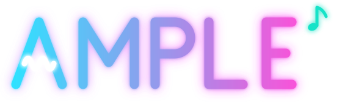

Double-click a revision to go there; right-click for more. Two pointers: here (ring) and studio (star). Tags are locked.
This tab's session was rejected. Project edits will not save.
Open the current link printed by ample open in a new tab; reloading this tab cannot restore an expired token.
ample open
Sign in again to continue. Reloading this tab is not enough.